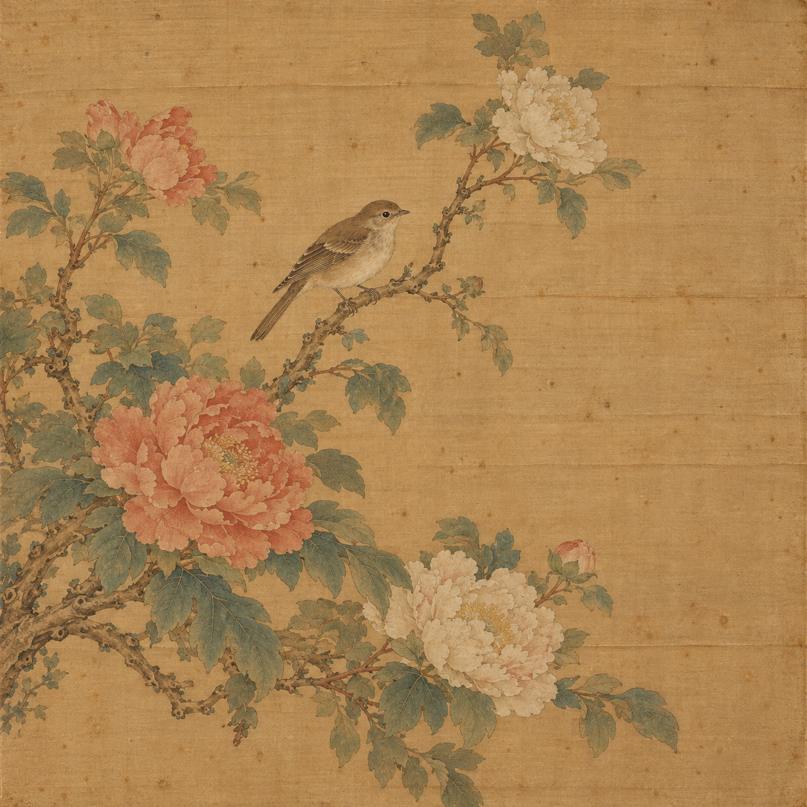
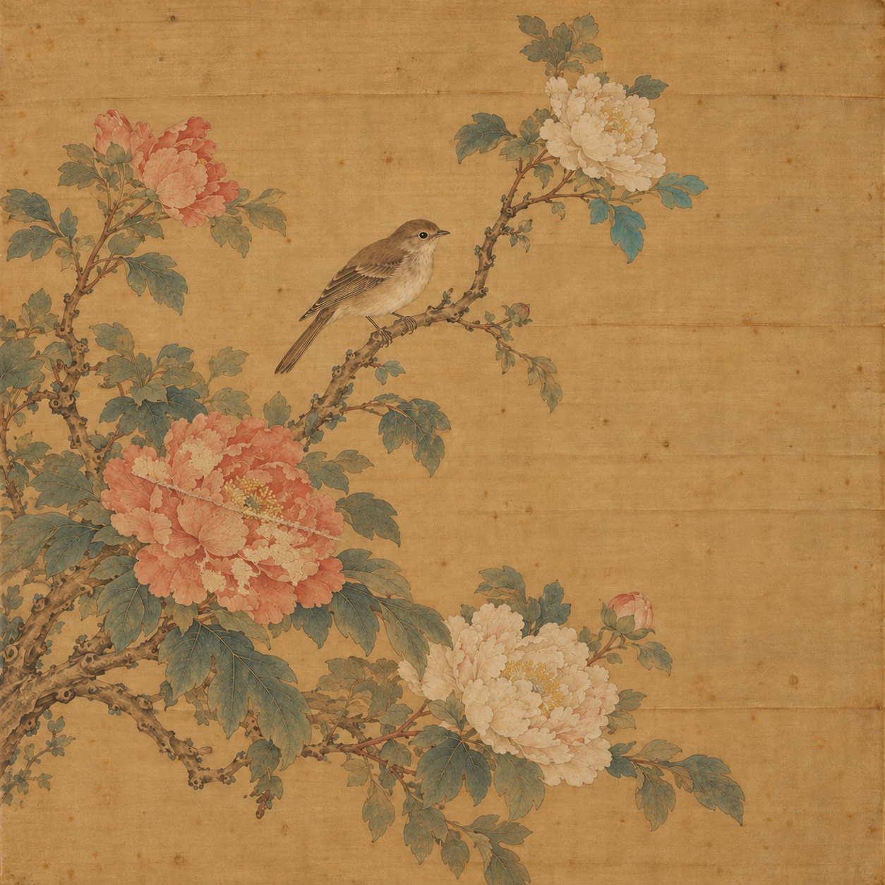

<!doctype html><html lang="zh-Hant"><meta charset="utf-8"><meta name="viewport" content="width=device-width,initial-scale=1"><title>GreyTheory · AI Artwork</title><style>
:root{color-scheme:dark}body{background:#0b101a;color:#e9f0f6;font:16px/1.7 system-ui;margin:0}main{max-width:1120px;margin:40px auto;padding:0 24px}header{display:flex;justify-content:space-between;gap:20px}h1{line-height:1.3}p,li{color:#b7c9dc}section{background:#131e2d;border:1px solid #304357;border-radius:12px;padding:22px;margin:20px 0}a{color:#75dfca}select{background:#172535;color:white;padding:9px;border:1px solid #40566b;border-radius:6px}.pair{display:grid;grid-template-columns:1fr 1fr;gap:16px}figure{margin:0}img{width:100%;border-radius:8px}figcaption{margin-bottom:10px}#notice{background:#342b20;border-left:3px solid #f3bc72;padding:12px}code{overflow-wrap:anywhere}@media(max-width:650px){.pair{grid-template-columns:1fr}}
</style><main><header><a href="../index.html">GreyTheory / Demo</a><select id="language" aria-label="Language"><option value="zh-TW">繁體中文</option><option value="en">English</option><option value="ja">日本語</option></select></header><h1 id="title"></h1><p id="intro"></p><p id="notice"></p><section class="pair"><figure><figcaption id="ref"></figcaption><a href="silk_reference.png"></a></figure><figure><figcaption id="obs"></figcaption><a href="silk_observed.png"></a></figure></section><section><h2 id="stepsTitle"></h2><ol id="steps"></ol><a id="open"></a> · <a id="reviewLink"></a><p id="own"></p></section><section><h2 id="resultTitle"></h2><p id="result"></p><p id="limits"></p></section><section><h2 id="filesTitle"></h2><ul id="files"></ul></section><section><h2 id="sourcesTitle"></h2><p id="why"></p><ul id="sources"></ul></section></main><script>
const translations={"zh-TW": {"title": "AI 絹畫：從外觀差異到待查驗區塊", "intro": "以故宮絹本書畫與國美館膠彩修復議題為參考，製作的原創虛構花鳥畫。不是任何館藏的複製品或修復紀錄。", "ref": "參考圖 · AI 虛構絹畫", "obs": "待比較圖 · AI 模擬差異", "notice": "AI 示意／RGB 圖片分析 · 非文物實測、非 XRF、非補畫判定", "stepsTitle": "現場怎麼展示", "steps": ["執行 python3 run.py workbench，進入「應用實驗室」，選藝術品情境。", "「示範資料來源」選「AI 絹畫圖片」，保留 PCA、3 個主成分、門檻 0.95，按執行。", "先關閉標記，比較右上葉片顏色和左下花瓣剝落；再開啟標記，查看系統圈出的區塊。", "把門檻提高到 0.99 再執行，比較標記數與優先查看的區塊；下載結果 JSON。"], "open": "開啟這組 GUI 預覽 →", "resultTitle": "實際計算結果", "result": "預設值標記 20 / 144 區塊。流程：RGB 區塊特徵 → Grey 窗口 → 只用參考圖擬合 GreyPCA → 待比較圖的重建誤差。", "limits": "AI 編輯可能改變提示範圍以外的細節，所以沒有精確變更真值，不報辨識準確率。照明、對位、影像壓縮也可能造成差異。這裡沒有顏料名稱、元素濃度、年代或真偽的推論。", "filesTitle": "選哪個檔案", "sourcesTitle": "查到的修復案例", "why": "這次選絹畫題材，是因為顏料層、脆弱基底與舊修補互相影響，適合解說「先標記、再查驗」。這是本 demo 的選題判斷，不是館方公布的修復難度排名。", "files": [["silk_reference.png", "參考圖"], ["silk_observed.png", "待比較圖"], ["results/analysis.json", "完整分析數值"], ["results/positions.csv", "區塊座標、誤差與標記"], ["results/observed_features.csv", "可到「光譜 / DOE」匯入的數值特徵（每列一區塊）"], ["results/reference_features.csv", "參考圖數值特徵"], ["provenance.json", "完整 AI prompts、案例連結與來源說明"]], "own": "換自己的對齊圖片：python3 run.py artwork --reference reference.png --observed observed.png。兩張照片需相同尺寸、範圍與相近光線；程式不會自動對位。", "case_notes": ["故宮 2026/10/08–2027/01/03 保存修復展，介紹保存、科學分析與修復。", "故宮 2023 年修復展：絹畫的老化、材料與歷次裝裱可能共同造成劣化。", "故宮官方影片以《交阯果然圖》展示修復過程；本 AI 花鳥畫不是該作。", "國美館委修的《綠蔭》有媒材皺縮剝落，《孔子廟》有空鼓、分離與蟲蝕等問題。", "國美館 2024 年新聞：林朝英《草書鵝群書》約兩百年，修護歷時兩年。"]}, "en": {"title": "AI silk painting: visual differences to inspection regions", "intro": "An original fictional bird-and-flower painting motivated by silk-painting and glue-color conservation reports. It is not a museum reproduction or treatment record.", "ref": "Reference · fictional AI painting", "obs": "Observed · AI-simulated differences", "notice": "AI illustration / RGB analysis · not museum measurements, XRF or retouch identification", "stepsTitle": "Live demonstration", "steps": ["Run python3 run.py workbench. Open Application lab and choose Artwork.", "Choose AI silk-painting images as input. Keep PCA, 3 components and quantile 0.95, then run.", "Hide the overlay. Compare the upper-right leaves and flaking on the lower-left peony, then show flagged tiles.", "Raise quantile to 0.99, rerun and compare flags and ranked regions. Download result JSON."], "open": "Open this GUI preview →", "resultTitle": "Computed result", "result": "Defaults flag 20 / 144 tiles. RGB patch features → Grey windows → reference-only GreyPCA → observed reconstruction error.", "limits": "AI edits may affect pixels outside the requested regions. No exact change mask or detection accuracy is available. Lighting, registration and compression can also create differences. No pigment, concentration, age or authenticity is inferred.", "filesTitle": "Files to use", "sourcesTitle": "Conservation sources", "why": "Fragile supports, paint layers and previous repairs interact. This makes silk painting useful for explaining inspection leads; this is our demo choice, not a museum difficulty ranking.", "files": [["silk_reference.png", "Reference image"], ["silk_observed.png", "Observed image"], ["results/analysis.json", "Full numeric analysis"], ["results/positions.csv", "Coordinates, errors and flags"], ["results/observed_features.csv", "Importable numeric features; one tile per row"], ["results/reference_features.csv", "Reference feature table"], ["provenance.json", "Full prompts, source links and provenance"]], "own": "Use your aligned pair: python3 run.py artwork --reference reference.png --observed observed.png. Match image dimensions, field of view and lighting. No automatic registration is performed.", "case_notes": ["NPM conservation exhibition, 2026-10-08 to 2027-01-03.", "The 2023 exhibition discusses aging, materials and earlier mounting in silk paintings.", "Official film about Jiao Zhi Guo Ran Tu; our fictional image is not that work.", "NTMFA commissions include flaking in Green Shade and delamination / insect damage in Confucius Temple.", "NTMFA reports two years of treatment for Lin Chao-ying’s roughly 200-year-old calligraphy."]}, "ja": {"title": "AI 絹画：外観の差から調査区画へ", "intro": "絹本画・膠彩画の修復事例を参考にした、原創の架空花鳥画です。実収蔵品の複製や修復記録ではありません。", "ref": "参照 · AI の架空絹画", "obs": "比較対象 · AI で模擬した差", "notice": "AI 示意／RGB 画像分析 · 実測・XRF・補彩判定ではありません", "stepsTitle": "実演の手順", "steps": ["python3 run.py workbench で起動し、応用ラボの作品情境を選びます。", "入力を AI 絹画画像にし、PCA、成分数 3、分位点 0.95 で実行します。", "枠を隠し、右上の葉の色と左下の花弁の剥落を比較します。その後、検出枠を表示します。", "分位点を 0.99 に上げて再実行し、検出数と優先区画を比較して JSON を保存します。"], "open": "この GUI プレビューを開く →", "resultTitle": "計算結果", "result": "初期設定で 20 / 144 区画を検出。RGB 区画特徴 → Grey 窓 → 参照だけで GreyPCA を学習 → 比較対象の再構成誤差。", "limits": "AI 編集は指定外の画素も変える可能性があるため、精密な正解マスクや検出精度はありません。照明、位置合わせ、圧縮も影響します。顔料・濃度・年代・真贋は推定しません。", "filesTitle": "使用するファイル", "sourcesTitle": "修復事例の出典", "why": "脆い基底、顔料層、過去の修理が関係するため、調査の手掛かりを説明する題材にしました。館が公表した難易度順位ではありません。", "files": [["silk_reference.png", "参照画像"], ["silk_observed.png", "比較対象画像"], ["results/analysis.json", "全分析数値"], ["results/positions.csv", "座標・誤差・検出"], ["results/observed_features.csv", "読み込み可能な数値特徴：1 行 1 区画"], ["results/reference_features.csv", "参照特徴表"], ["provenance.json", "全プロンプト・出典・生成記録"]], "own": "独自の位置合わせ済み画像：python3 run.py artwork --reference reference.png --observed observed.png。寸法・範囲・照明をそろえます。自動位置合わせは行いません。", "case_notes": ["故宮の保存修復展：2026/10/08–2027/01/03。", "2023 年の展覧会は絹画の老化・材料・過去の表装による劣化を説明しています。", "《交阯果然図》の修復を記録する公式映像。本 AI 花鳥画は同作ではありません。", "国美館の委託作品《緑蔭》には剥落、《孔子廟》には分離・虫害などが報告されています。", "国美館は、約 200 年前の林朝英の書の修護に 2 年を要したと報告しています。"]}},sources=[{"id": "npm-2026", "organization": "National Palace Museum", "url": "https://www.npm.gov.tw/Exhibition-Content.aspx?l=1&sno=04014556", "title": "物華再現：文物保存修復", "event_dates": ["2026-10-08", "2027-01-03"], "checked": "2026-10-21", "summary": "Current conservation exhibition covering preventive care, scientific analysis and restoration. Its overview does not establish a difficulty ranking of individual objects."}, {"id": "npm-silk", "organization": "National Palace Museum", "url": "https://theme.npm.edu.tw/InvestigationRestorationatNPM/page-2", "title": "文物檢測與修復在故宮：書畫修復", "event_year": 2023, "summary": "A historical exhibition describes two silk paintings affected by aging, painting materials and earlier mounting methods. Preservation of original materials motivates minimal intervention and reversibility."}, {"id": "npm-film", "organization": "National Palace Museum", "url": "https://www.youtube.com/watch?v=urhBcjXWFNg", "published": "2023-04-05", "title": "故宮書畫修復_清 郎世寧 交阯果然圖 完整版", "summary": "Official documentation of the restoration of a real silk painting. The generated bird-and-flower image is not that painting."}, {"id": "ntnu-2024", "organization": "National Taiwan Normal University, College of Arts", "url": "https://arts.ntnu.edu.tw/index.php/2024/01/10/2024011004/", "published": "2024-01-10", "title": "本院文保中心承接國立臺灣美術館及臺北市立美術館委託之東方繪畫典藏作品修復", "summary": "Documents commissioned conservation of Lin Yu-shan's Green Shade, Chen Ching-hui's Lady, Chen Chin's Confucius Temple, and Tsai Hsueh-hsi's Taipei Confucius Temple. Reported issues include flaking, wrinkles, staining, delamination and insect damage. This motivates a fictional fragile-paint-layer example, not a claim of detecting those problems from RGB alone."}, {"id": "ntmofa-2024", "organization": "National Taiwan Museum of Fine Arts", "url": "https://www.ntmofa.gov.tw/News_Content.aspx?n=1383&s=207644", "published": "2024-04-13", "title": "匯流溯源暨致未來世代的美術史聯合開幕", "summary": "Conservation exhibition news reports a two-year treatment of Lin Chao-ying's approximately 200-year-old cursive calligraphy. The demo does not reproduce that work."}];
function render(language){const t=translations[language];const reviewLink=document.getElementById('reviewLink');reviewLink.textContent={'zh-TW':'專家查看與實測報告 →',en:'Conservation review and experiments →',ja:'専門確認と実験報告 →'}[language];reviewLink.href='review/index.html?lang='+language;document.documentElement.lang=language==='zh-TW'?'zh-Hant':language;document.getElementById('language').value=language;for(const [key,value] of Object.entries(t)){if(typeof value==='string')document.getElementById(key).textContent=value;}
for(const key of ['steps','files','sources'])document.getElementById(key).replaceChildren();for(const step of t.steps){const li=document.createElement('li');li.textContent=step;document.getElementById('steps').append(li);}for(const [path,label] of t.files){const li=document.createElement('li'),link=document.createElement('a');link.href=path;link.textContent=label+' · '+path;li.append(link);document.getElementById('files').append(li);}for(const [index,source] of sources.entries()){const li=document.createElement('li'),link=document.createElement('a');link.href=source.url;link.textContent=(source.published||source.event_year||source.event_dates?.join('–')||'')+' · '+source.title;link.target='_blank';link.rel='noopener';li.append(link,document.createTextNode(' — '+t.case_notes[index]));document.getElementById('sources').append(li);}document.getElementById('open').href='../../../examples/workbench/index.html?lang='+language+'&demo=art_images';}
document.getElementById('language').onchange=event=>render(event.target.value);render(new URLSearchParams(location.search).get('lang') in translations?new URLSearchParams(location.search).get('lang'):'zh-TW');
</script></html>